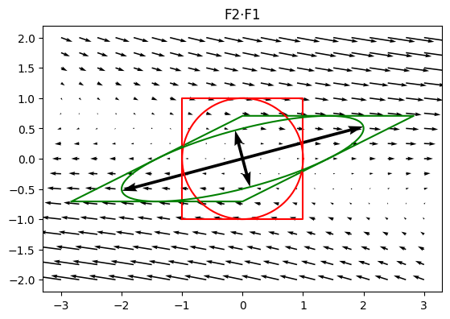
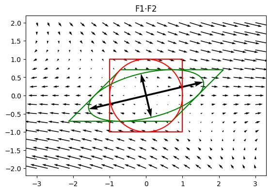

Superposition of deformation#
\(\boldsymbol{F}\) maps any undeformed vector into its deformed state. This vector can also be a position vector of a point. Therefore \(\boldsymbol{F}\) also maps any point into its new position after deformation. Considering two successive deformations \(\boldsymbol{F_1}\) and \(\boldsymbol{F_2}\) write transformation equation….
\[\mathbf{x}_1 = \boldsymbol{F_1} \cdot \mathbf{X}\]
\[\mathbf{x}_2 = \boldsymbol{F_2} \cdot \mathbf{x}_1\]
Substitute first equation to second gives:
\[\mathbf{x}_2 = \boldsymbol{F_2} \cdot \boldsymbol{F_1} \cdot \mathbf{X}\]
so
\[\mathbf{x}_2 = \boldsymbol{F} \cdot \mathbf{X}\]
where
\[\boldsymbol{F} = \boldsymbol{F_2} \cdot \boldsymbol{F_1}\]
The total deformation gradient can be written as the product of two partial deformation gradients, where order from right to left corresponds to superposition of deformations.
F1 = defgrad2([[1, 1], [0, 1]])
F2 = defgrad2([[2 ** 0.5, 0], [0, 0.5 ** 0.5]])
plot_defgrad(F2 @ F1, title='F2⋅F1')

plot_defgrad(F1 @ F2, title='F1⋅F2')
